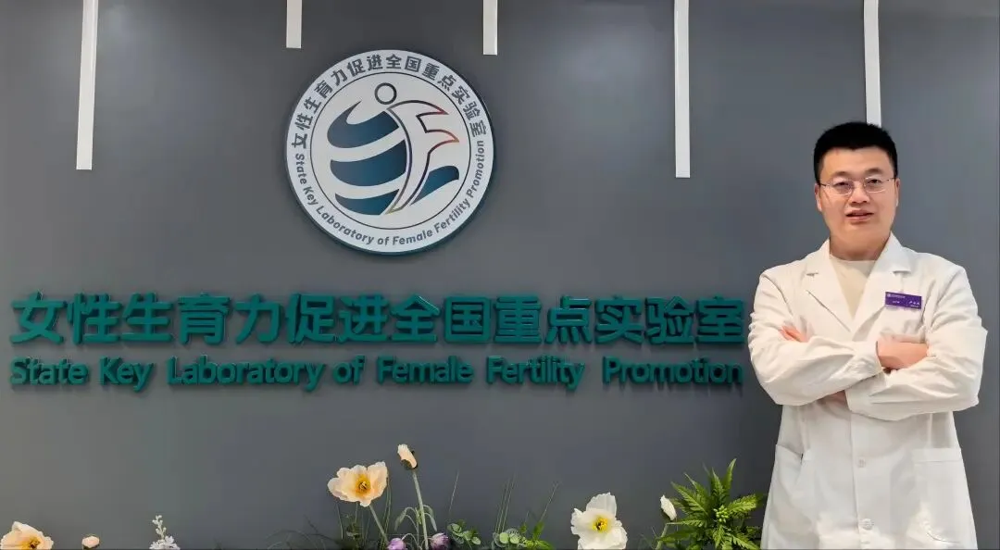

北医三院卢永杰研究员课题组招聘博士后
原文：https://mp.weixin.qq.com/s?__biz=MzAwMzIzOTk5OQ==&mid=2247534596&idx=2&sn=9072ab41365ef57b0f125d61da301737&chksm=9b3c3154ac4bb84209b94f5bb07dd573744ea884c84ddfdea893feec8a4ba258a8c65e3b10ef#rd 合集：求职/求学/招聘
01
写在前面
我们长期发布招聘/求职板块(甚至我给自己都发了求职：Biomamba求职| 国奖+4篇一作SCI)，欢迎各位老师/老板欢迎联系~我们也在招贤纳士Biomamba生信基地秋季招聘开启！其它需要求职的小伙伴也欢迎把简历发给我们[Biomamba_zhushou]，大家一起找工作/学习。用人单位也可以联系我们免费刊登招聘信息~
02
ABOUT US

【博士后合作导师介绍】卢永杰，北京大学第三医院生殖医学中心，研究员，乔杰院士团队独立PI，主持国家自然科学基金青年项目B类（原优青）和C类，国家重点研发项目骨干。以第一作者在Nature、Nature Cell Biology、Human Reproduction Open、Science China Life Sciences等高水平SCI杂志发表论文，研究入选2024年“中国科学十大进展”。曾获“北京大学医学部优秀博士后”及“北京大学优秀博士后”称号。获得授权专利2项，参编专著2部。 【课题组主要研究方向】- 生殖细胞发育体外模型构建
- 生殖细胞发育的生理和病理调控机制研究
- 生殖细胞发育障碍疾病干预措施研发
【研究平台】
- 课题组依托女性生育力促进全国重点实验室、国家妇产疾病临床医学研究中心、辅助生殖教育部重点实验室等国家级研究平台开展工作；具有分子生物学、细胞生物学、单细胞测序、组织病理学和生物信息学等实验技术平台
- 课题组承担国家自然科学基金、国家重点研发计划等国家级项目，并且已经初步建立了生殖细胞体外发育体系，可以为博士后开展课题研究提供良好的平台、资金、技术支撑。
根据团队建设需要，拟公开招博士后成员，要求如下:
03
JOIN US
【应聘条件】
1. 基础医学、临床医学(学术型）、生物学或生物信息学等相关专业背景均可，优先考虑具有细胞生物学（尤其是干细胞方向）、发育生物学或生物信息学等相关研究经验者。
2. 已获得（原则上不超过3年）或即将获得博士学位，身心健康，年龄不超过35周岁；3. 以第一作者身份发表过SCI论著，具有良好的英文阅读、写作和表达能力，有扎实的专业知识和科研技能，发表过高水平论文者优先；4. 工作严谨认真，积极主动、踏实肯干，责任心强，善于沟通交流，有良好的团队协作能力；5. 符合北京大学医学部科研型博士后管理规定。 【岗位待遇】 以下待遇信息供参考，具体按照国家、北京大学医学部和北京大学第三医院博士后管理办法执行和调整。
- 年薪（含单位公积金）: 普通博士后30万元/年；入选“北医三院启航博士后”项目33万元/年；入选“北京大学医学部博雅博士后”项目35万元/年；入选“国家博士后创新人才支持计划”45万元/年；在站期间表现优秀，年薪提高2万元；
- 绩效：享受医院科研奖励、科室和课题组绩效奖励；
- 住房：可申请医学部、医院的博士后公寓；
- 户口：非京籍户口可迁入北医集体户，配偶及子女按规定流动；
- 保险：享受公费医疗待遇缴纳社会保险、住房公积金等；
- 基金申请: 课题组全力协助博士后申请各项基金；
- 聘期结束取得优秀科研成果且满足北京大学第三医院预聘制教职要求的，经考核评估通过后可聘为预聘制岗位人员。

招收程序

- 进站时间为每年1、4、8和10月，候选人可随时申请；
- 申请人请先联系合作导师（13718198473（微信同号））或将个人简历（含联系方式、教育背景、工作经历、发表文章、曾获奖项、科研兴趣及未来研究计划）直接发送到luyongjieyichuan@163.com，与合作导师商定博士后期间研究计划。双方经沟通了解达成合作意向后，在“北医三院官网-人事招聘-博士后招聘-科研型博士后”栏目中投递简历，在“拟应聘合作导师”处填写合作导师姓名卢永杰。
- 北医三院对博士后的申请资格进行审核，满足条件者于每年3、6、9和12月参加科室及医院组织的面试，择优录用；
- 拟招收博士后入职体检合格，公示七日无疑议后按要求办理进站手续。